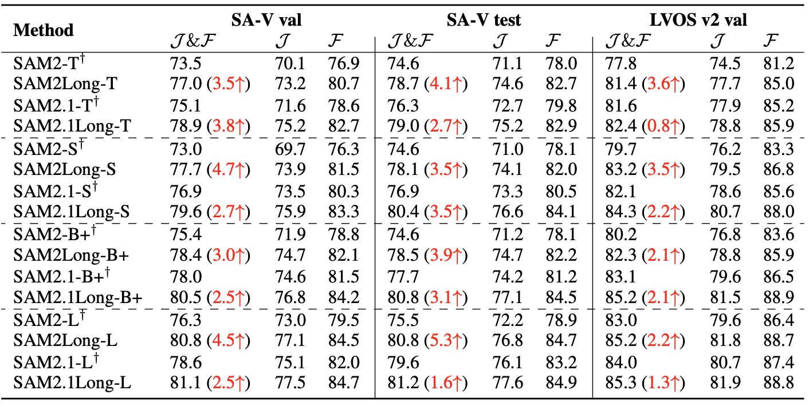

Fig 1: Comparison of occlusion handling and long-term compatibility between SAM 2 and SAM2Long.
Abstract
SAM 2's greedy-selection memory design suffers from the "error accumulation" problem, where an errored or missed mask will cascade and influence the segmentation of the subsequent frames, which limits the performance of SAM 2 toward complex long-term videos. To this end, we introduce SAM2Long, an improved training-free video object segmentation strategy, that considers segmentation uncertainty and selects optimal video-level results through a constrained tree search. SAM2Long maintains multiple segmentation pathways, selecting branches with higher cumulative scores at each frame. This heuristic design ensures robustness against occlusions and object reappearances. Without additional parameters or further training, SAM2Long significantly outperforms SAM 2 on six VOS benchmarks, achieving an average improvement of 3.0 points and up to 5.3 points in J&F across all 24 head-to-head comparisons on long-term segmentation benchmarks SA-V and LVOS.
Demo Video
Method Pipeline
Fig 2: (a) The pipeline maintains multiple memory pathways, selecting the highest-scoring masks at each step.
(b) Masks are chosen based on certainty; if uncertain, diverse masks are selected to avoid errors.
Main Result

SAM2Long consistently improves SAM2 over all model sizes and datasets.